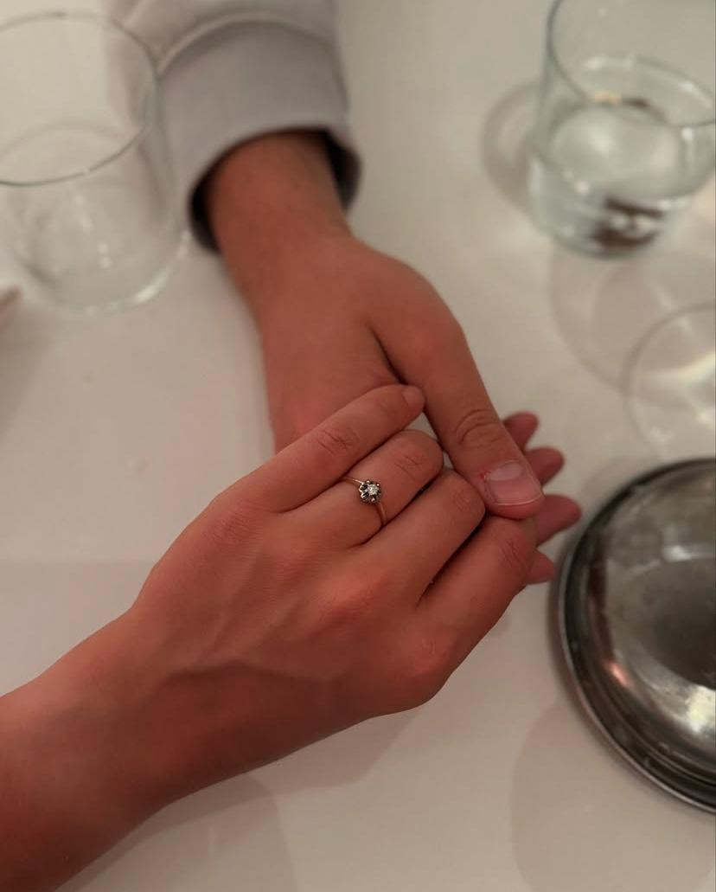

~ Eerste date ~
6-5-2022

Een drankje doen bij Loods 61.
Buiten gezeten, begonnen met kletsen en niet opgehouden.
Het was ineens laat.
~ Verkering dag ~
17-7-2022

We waren op het festival Bontgenoten.
Dronken op de fiets terug naar huis vroeg Jannis of Julia zijn vriendinnetje wilde zijn.
Dat vond Julia niet romantisch genoeg, dus besloot Jannis eenmaal thuis onder de douche nog een poging te wagen.
Hierop was Julia haar antwoord: JA!
~ Samen wonen ~
30-7-2023

Samen een huis gekocht op 28 juli:
Julia woonde weer eventjes thuis en Jannis woonde op 23 m2.
Eigenlijk woonde we praktisch al samen op 23 m2, omdat Julia altijd haar werk, vrienden en natuurlijk Jannis in Eindhoven had.
We hadden besloten rond te gaan neuzen naar een huurwoning en vanaf september 2023 ongeveer samen te gaan wonen.
Dat liep even iets anders. Via via kwamen we een appartement tegen midden in de stad.
Dit had Julia naar Jannis gestuurd met daarbij ‘Zouden we deze niet kende kope’. Zo geschiedde.
~ Verloving ~
12-5-2025

Samen (onze eerste echte vakantie) naar Barcelona.
Jannis was nerveus maar Julia dacht dat dat door het vliegen kwam.
De werkelijke reden was dat Jannis een prachtige vintage verlovingsring bij zich droeg, zoekende naar het juiste moment.